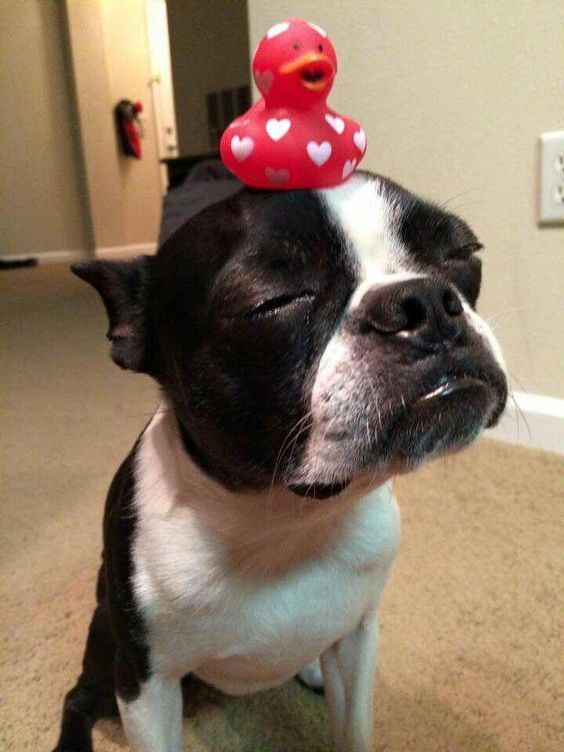
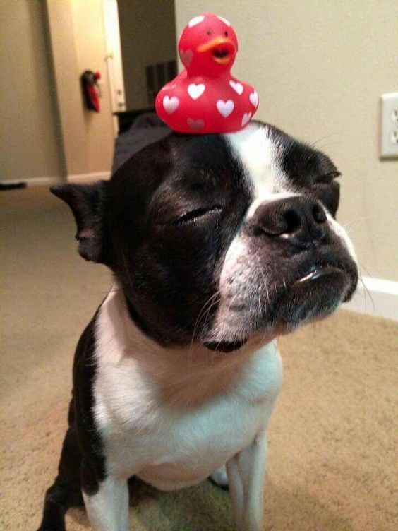

Pets
Bacon Q Dog

Brown labradoodle wearing colorful lei
Bacon Q. Dog is a 9yr old labradoodle. He prefers to spend his days lounging among the three different beds/couches that his family has gifted him. He enjoys a walk or two around the neighborhood, as long as he can pretend that he doesn't see any of the other animals to avoid the embarrassment of not wanting to admit he has no wolf-like skills in chasing them.
At night just as the rest of the family is ready to relax, Bacon suddenly wants to release all of his energy. He will place his toys on a mini couch and frantically drag the couch around, giving his toys "a ride." There is also a lot of rolling. Lots and lots of rolling.
Photo Gallery


Brown labradoodle wearing an orange bandana
Small labradoodle puppy wearing a graduation cap and gown

Girl and dog demonstrating a sit and stay procedure
Brown labradoodle wearing a pirate costume
Likes
- Belly rubs
- Playing tug-of-war
- Sneaking onto the couch
Colleen van Lent
Fitz
Boston terrier watching a tennis ball at the table.
Loves chasings tennis balls, chipmunks, squirrels, and birds. Often found sitting by the fire in wintertime, and in sun patches when available. He’s energetic, mischievous, and easily bored. He loves people and gets grumpy if left without a lap too long.
Loves barking up trees, running around on the lawn, and digging in the dirt looking for moles. He especially likes getting treats and whines when he comes inside and doesn’t get a snack.
Photo Gallery
 

Fitz is chewing a toy.
Fitz is playing with a toy.

Fitz is getting down on the floor, looking at the camera.
Fitz is standing on the floor
Likes
- Blankets
- Being warm
- Barking
Malan + Anna Vento
Snow

Snow is looking at the camera.
The elegant white cat with mesmerizing blue eyes, gracefully prowls through the house, leaving a trail of soft paw prints in her wake.
With a penchant for cozy spots and a gentle purr that could melt even the coldest hearts, Snow embodies feline charm and warmth.
Photo Gallery
Snow is yawning
Snow is smelling the flowers.
Snow is sitting near the window.
Snow is hiding behind the plant.
Likes
- Sleeping
- Quiet Space
- Cleaning